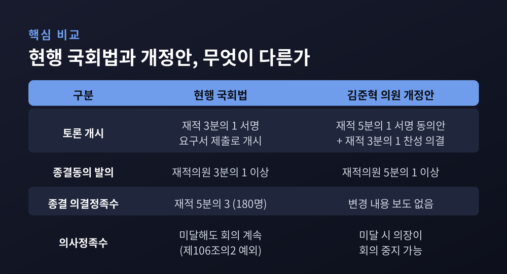
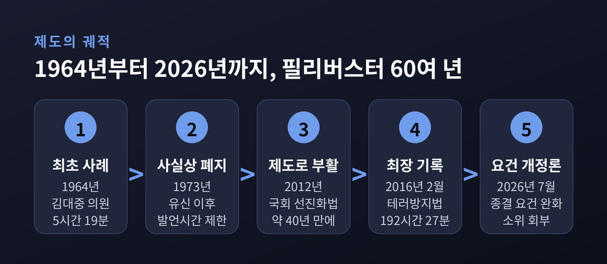
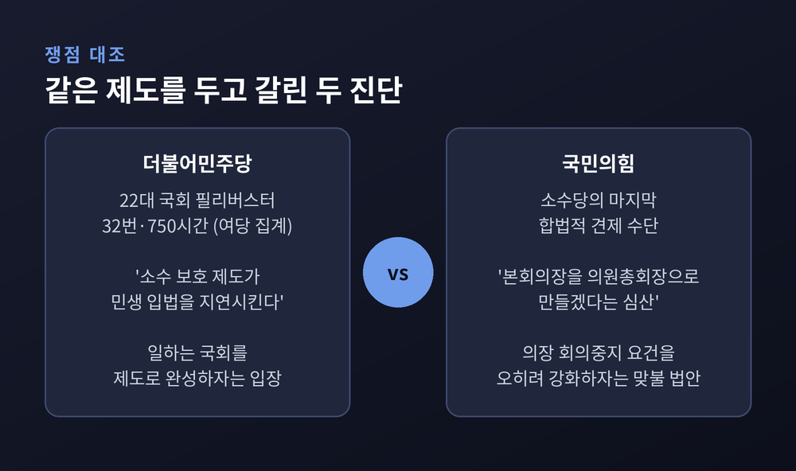
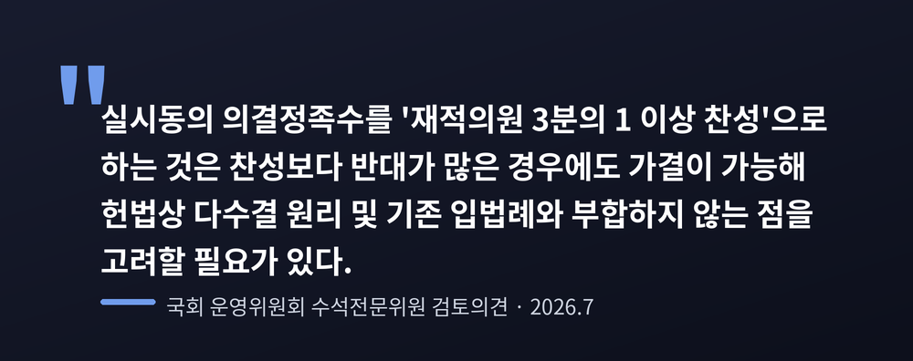
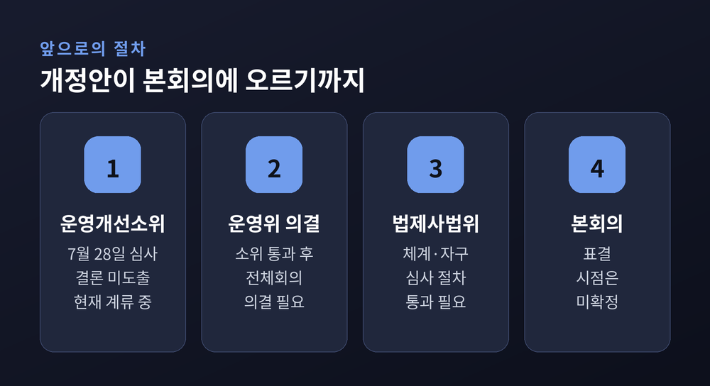

필리버스터 종결 요건 완화 국회법 개정안, 여야가 정면 충돌한 이유
이번 글에서는 2026년 8월 임시국회의 최대 쟁점으로 떠오른 필리버스터 요건 완화 국회법 개정안을 정리해 보겠습니다. 종결동의 발의 문턱을 낮추고, 국회의장에게 회의 중지 권한을 주는 것이 핵심입니다. 여야의 주장과 전문가들의 엇갈린 진단을 함께 놓고 살펴보겠습니다.
개정안에 담긴 세 가지
김준혁 더불어민주당 의원이 대표발의한 국회법 일부개정법률안입니다. 2026년 7월 27일 국회 운영위원회 전체회의에서 다른 법안들과 함께 운영개선소위원회로 넘어갔습니다. 그날 소위로 회부된 법안만 63건이었습니다.
내용은 크게 세 갈래입니다.
첫째, 무제한토론 종결동의의 발의 요건을 재적의원 3분의 1에서 5분의 1로 낮춥니다.
둘째, 무제한토론을 시작하는 절차 자체를 바꿉니다. 지금은 재적의원 3분의 1 이상이 서명한 요구서를 의장에게 내면 그것으로 개시됩니다. 개정안은 재적의원 5분의 1 이상이 서명한 동의안을 낸 뒤, 재적의원 3분의 1 이상의 찬성으로 의결하도록 했습니다.
셋째, 무제한토론 중에 본회의장에 남은 의원 수가 의사정족수에 못 미치면 국회의장이 회의를 중지할 수 있게 했습니다. 의사정족수는 재적의원 5분의 1입니다.

한 가지는 짚어둘 필요가 있습니다. 보도로 확인된 것은 종결동의를 '발의'하는 문턱을 낮춘다는 대목입니다. 종결동의를 '가결'하는 데 필요한 재적의원 5분의 3, 즉 180명이라는 정족수를 바꾼다는 내용은 어느 기사에도 없었습니다.
세 번째 조항이 왜 민감한가
현행 국회법 제106조의2에는 눈에 잘 띄지 않는 예외 조항이 하나 있습니다. 무제한토론을 하는 동안에는 재적의원 5분의 1이 출석하지 않아도 회의를 계속한다는 규정입니다.
새벽 세 시 텅 빈 본회의장에서 의원 한 명이 원고를 읽어 내려가는 장면. 그 장면이 가능했던 근거가 바로 이 예외입니다.
개정안은 이 예외를 걷어내려 합니다. 그래서 야당이 가장 크게 반발하는 지점도 여기입니다.
1964년부터 2026년까지, 제도의 궤적
필리버스터를 이해하려면 시간을 조금 거슬러 올라가야 합니다.
시작은 1964년입니다. 김대중 의원이 동료 의원의 체포동의안 처리를 막기 위해 5시간 19분 동안 의사진행발언을 이어갔습니다. 당시에는 의사진행발언에 시간 제한이 없었습니다.
1973년 유신 이후 발언 시간에 제한이 생기면서 이 수단은 사라집니다. 그리고 2012년, 이른바 국회 선진화법으로 약 40년 만에 되살아났습니다.
선진화법의 설계는 단순했습니다. 국회의장의 직권상정을 엄격히 제한하는 대신, 소수당에게 합법적인 지연 수단을 쥐여준 것입니다. 대신 재적의원 5분의 3이 모이면 그 지연을 끊을 수 있게 했습니다. 법안 처리를 놓고 벌어지던 몸싸움, 이른바 '동물국회'를 막자는 취지였습니다.

부활 이후의 기록도 남아 있습니다. 2016년 2월 테러방지법 반대 필리버스터에서는 야당 의원 108명이 나서 누적 192시간 27분을 채웠습니다. 당시 세계 최장 기록이었습니다. 이종걸 의원이 12시간 31분을 발언해 개인 기록을 새로 썼고, 2020년 12월에는 윤희숙 의원이 12시간 47분으로 그 기록을 넘었습니다.
2020년 12월은 또 다른 의미도 있습니다. 제도 도입 이래 처음으로 종결동의가 가결되어 토론이 강제로 끝난 사례였습니다.
여기서 여야의 위치는 여러 차례 바뀌었습니다. 2016년에 마이크를 잡았던 쪽과 2026년에 마이크를 잡은 쪽이 서로 다릅니다.
여당의 주장
더불어민주당은 제도가 본래 취지에서 벗어났다고 봅니다.
국회 운영위원장을 겸하고 있는 한병도 대표 직무대행 겸 원내대표는 7월 27일 최고위원회의에서 이렇게 말했습니다. 22대 국회 들어 국민의힘이 사용한 필리버스터가 32번, 시간으로는 750시간에 달한다는 것입니다. 여당 집계 기준입니다.
그는 "소수의 의견을 보호하기 위해 마련한 제도가 국회를 마비시키고 민생 입법을 지연시키는 수단으로 악용되고 있다"고 했습니다. 같은 날 운영위 전체회의에서는 "국회의 시계가 멈춰서는 일이 없도록 제도를 정비해야 한다"고 덧붙였습니다.
여당의 프레임은 명확합니다. 몸싸움을 막으려 만든 제도가 이제는 아무것도 처리하지 못하는 '식물국회'를 만들고 있다는 것입니다.
같은 방향의 법안도 이어지고 있습니다. 김태년 의원은 상임위원장이 정당한 사유 없이 회의를 열지 않으면 위원장을 교체할 수 있도록 하는 개정안을 냈습니다. 문금주 의원은 8월 13일, 상임위에서 재적위원 전원 찬성으로 의결된 법안은 본회의 무제한토론 대상에서 빼자는 개정안을 대표발의했습니다.
야당의 주장
국민의힘은 소수당의 마지막 견제 수단이 사라진다고 봅니다.
장동혁 대표는 "국회 본회의장을 민주당 의원총회장으로 만들겠다는 심산"이라고 했습니다. 정점식 원내대표는 7월 31일 패스트트랙 단축 법안을 두고 "국회를 민주당의 거수기로 여기고 앞으로 더 빨리 손을 드는, 말 잘 듣는 기계로 만들겠다는 독재 악법"이라고 비판했습니다.
운영위에서는 박충권 의원이 이렇게 반박했습니다. "일 잘하는 국회는 어느 한쪽 방향으로 품질 미달의 법안들을 양적으로 밀어내는 국회가 아니다."
국민의힘은 맞불 법안도 냈습니다. 필리버스터 도중 국회의장이 일방적으로 회의를 중지하지 못하도록 오히려 요건을 강화하는 내용입니다.

다만 국민의힘은 의석수에서 열세입니다. 개정안을 표결로 막아내기는 어려울 것이라는 관측이 지배적입니다.
국회 사무처가 남긴 검토의견
정당의 주장 바깥에서 나온 목소리도 있습니다. 법률신문이 단독 보도한 국회 운영위 수석전문위원의 검토의견입니다.
회의 중지권에 대해서는 이렇게 적혔습니다. 무제한토론이 내실 있게 진행되도록 일정 수 이상의 참여를 확보하려는 개정 취지와, 토론이 장시간 이어지는 경우 의사정족수를 계속 충족시키기 쉽지 않다는 현실적 측면을 종합적으로 결정할 필요가 있다는 것입니다. 찬성도 반대도 아닌, 신중론에 가깝습니다.
더 날카로운 지적은 실시 절차 쪽입니다. 전문위원은 무제한토론 개시도 표결을 거치게 해 절차의 통일성을 확보하려는 취지는 인정했습니다. 그러면서 실시동의 의결정족수를 재적의원 3분의 1 찬성으로 두면 "찬성보다 반대가 많은 경우에도 가결이 가능"해진다고 했습니다. 헌법상 다수결 원리와 기존 입법례에 부합하지 않는다는 것입니다.

이 개정안은 7월 28일 오전 운영개선소위에서 다른 국회법 개정안 7건과 함께 심사됐습니다. 결론은 나지 않았습니다.
전문가들의 시선도 갈립니다
학계와 정치권 분석가들의 평가는 한쪽으로 모이지 않습니다.
이선우 전북대 정치외교학과 교수는 국회 선진화법이 입법 과정을 지나치게 지연시키는 부작용이 있었던 것은 사실이라고 인정했습니다. 다만 한 정당이 일방적으로 빠르게 법안을 처리하겠다는 것은 부적절하다고 했습니다.
이재묵 한국외대 정치외교학과 교수는 다수결 논리로 모든 것을 하겠다는 태도가 대화와 타협의 헌법 정신에서 멀어지는 일이라고 봤습니다. 윤태곤 더모아 정치분석실장은 지금은 오히려 협치를 강제할 수단을 늘려야 할 때라고 짚었습니다.
박창환 장안대 특임교수의 지적은 조금 다른 각도입니다. 다수 의석만으로 규칙 개정을 밀어붙이면 다수당이 바뀔 때마다 운영 규칙이 함께 바뀌는 악순환이 생길 수 있다는 것입니다.
양쪽 모두를 겨눈 평가도 있습니다. 이종훈 정치평론가는 무조건 각을 세우려는 야당 지도부에도 문제가 있다고 하면서도, 여당이 저항 수단을 모두 없애려는 것은 곤란하다고 했습니다.
2012년 선진화법 처리를 주도했던 황우여 전 국민의힘 비상대책위원장의 회고도 남았습니다. 마지막에는 표결로 가더라도 그 전에는 충분히 협의하라는 것이 제도의 취지였다는 이야기입니다.
8월 국회, 어떻게 흘러갈까
8월 임시국회는 8월 2일 회기에 들어갔습니다. 국회법상 자동 소집일은 16일이지만, 국민의힘이 임시회 소집을 요구하면서 앞당겨졌습니다.
실질적인 가동은 8월 중순으로 예상됩니다. 여름 휴가철이 겹쳤고, 민주당 전당대회가 8월 17일에 열리기 때문입니다.
처리 순서는 대체로 예측됩니다. 먼저 패스트트랙 심사 기간을 단축하는 국회법 개정안이 표결에 부쳐질 전망입니다. 이 법안은 7월 31일 본회의에 상정된 뒤 국민의힘이 필리버스터에 나섰지만, 8월 1일 0시 회기가 끝나면서 약 7시간 23분 만에 자동으로 종결됐습니다. 무제한토론 중 회기가 끝나면 종결이 선포된 것으로 보고 다음 회기에서 곧바로 표결한다는 조항 때문입니다.

필리버스터 요건 개정안은 그다음 순서입니다. 아직 운영위 소위에 머물러 있어, 소위 의결과 전체회의, 법제사법위원회를 거쳐야 본회의에 오릅니다. 시점을 못 박기는 이릅니다.
한 가지 변수는 여당 내부에도 있습니다. 지난해 12월 비슷한 취지의 개정안이 법제사법위원회를 통과했지만, 조국혁신당 등이 소수의견 보호라는 제도의 취지에 어긋난다며 반발해 본회의 문턱을 넘지 못한 전례가 있습니다.
정리하면 이렇습니다. 이번 논쟁은 어느 정당이 옳은가의 문제만은 아닙니다. 다수의 결정권과 소수의 발언권 가운데 무엇을 얼마나 보장할 것인가를 다시 묻는 일입니다.
두 가치 모두 의회 민주주의의 조건입니다. 어느 하나만 남으면 국회는 다른 방식으로 기능을 잃습니다.
다만 규칙을 바꾸는 일에는 한 가지 조건이 따라붙습니다 — 그 규칙은 언젠가 지금의 다수당이 소수당이 되었을 때에도 그대로 적용된다는 사실입니다.
필리버스터 요건 완화 국회법 개정안이 8월 국회에서 어떤 결론에 이를지, 조금 더 지켜볼 일입니다.